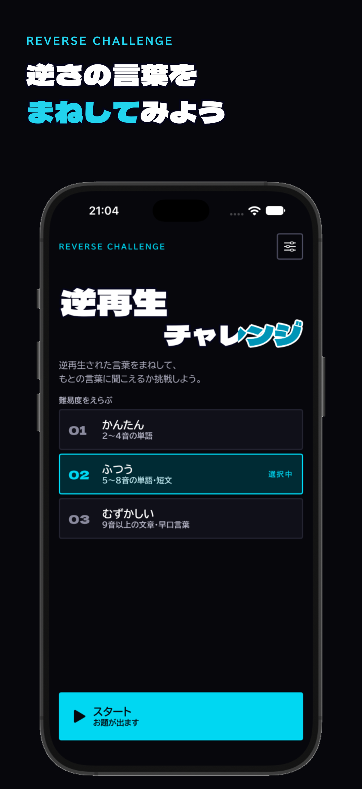
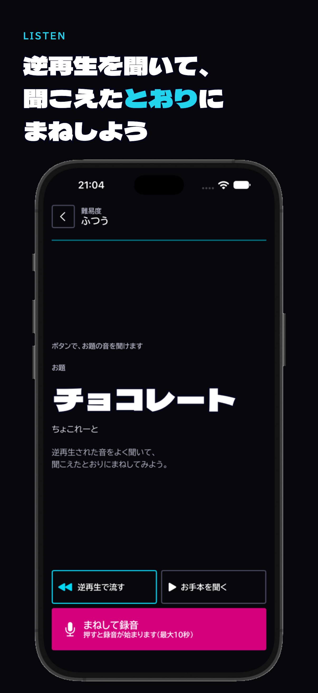
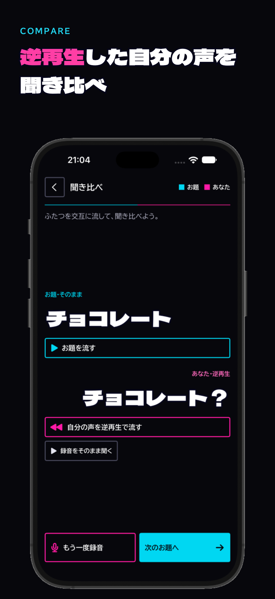

REVERSE CHALLENGE
逆さの言葉を
まねしてみよう
お題の言葉が逆再生で流れます。聞こえたとおりにまねして録音すると、あなたの声も逆再生。もとの言葉に聞こえるか、聞き比べてみよう。
画面



遊び方
- 難易度をえらんでスタートかんたん（2〜4音の単語）、ふつう（5〜8音の単語・短文）、むずかしい（9音以上の文章・早口言葉）。
- 逆再生されたお題を聞くお題の文字は最初から見えます。何度でも聞けて、お手本も流せます。
- 聞こえたとおりにまねして録音ボタンを押すと録音が始まり、もう一度押すと止まります（最大10秒）。
- 自分の声を逆再生して聞き比べお題（そのまま）と、自分の声（逆再生）を交互に流して、同じ言葉に聞こえるか確かめます。
特長
- 150問のお題難易度ごとに50問。単語から早口言葉まで。
- 録音は保存しません録音した声は、ラウンドが終わると破棄します。端末の外には送りません。
- お題の読み上げ速度と声を変えられます設定画面で、速さ（×0.5〜×1.5）と声をえらべます。
- アカウント登録は不要ダウンロードして、すぐに遊べます。
動作環境
- iPhone（iOS 17 以降）
- マイクを使います。初めて録音するときに、許可をお願いします。
- 広告を表示するため、通信が必要な場面があります。通信できなくても遊べます。